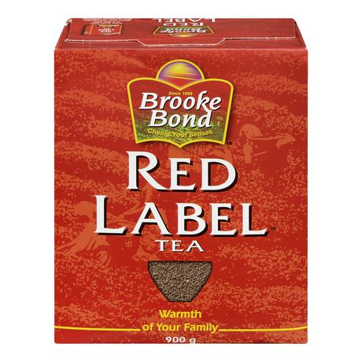

Chai Tea
- Red Label Tea from Namaste India at 103rd and Metcalf
- milk (2% or skim)
- ginger
- sugar
Remove the peel from the ginger and cut it into thin slices. Boil a little water and the ginger in a pan over medium heat. Add 2 teaspoons of Red Label Tea. Add one cup of milk. Bring back to boil. Strain the tea. Add one teaspoon sugar.
